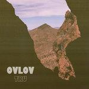
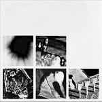
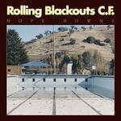
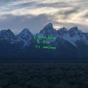
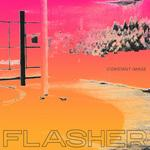

Music Reviews
-

Tony Molina Kill the Lights
Tony Molina's folk-driven Kill the Lights revisits the dawn of the album as a self-contained art form. It is also a love-stricken 15 minutes of jangle pop perfection.
Juan Edgardo Rodríguez reviews... -

Ovlov TRU
TRU, Ovlov's first album in five years, manages to distinguish itself since it calls back to a time when tuneful melodicism demanded big and bold affirmations.
Juan Edgardo Rodriguez reviews... -
Deafheaven Ordinary Corrupt Human Love
The chameleonic death metal group want to make something meaningful, magical even, on Ordinary Corrupt Human Love. It is, like most of their polarizing body of work, equal parts off-putting and fiercely inclusive.
Juan Edgardo Rodríguez reviews... -
Florence and the Machine High As Hope
Florence and the Machine's uneven fourth album proves that hope is really what kills you.
Matthew Smith reviews... -

Nine Inch Nails Bad Witch
In Nine Inch Nails' most experimental album yet, Trent Reznor looks for and fails to find easy answers to complicated questions. But the journey leads him down a rabbit hole of industrial clang, trip-hop percussions and Bowie-like jazz breakdowns.
Joe Marvilli follows Trent Reznor's search for answers... -

Kamasi Washington Heaven and Earth
After creating such a warranted stir with his first album, Kamasi Washington shows no sign of second album jitters, unleashing a double-headed beast of a record.
Tom Parmiter reviews... -
Snail Mail Lush
Snail Mail's debut album is an admirable, skillful work that excels in simplicity and directness.
Joe Marvilli feels the heat wave... -

Rolling Blackouts Coastal Fever Hope Downs
After a pair of promising EP's, the Melbourne, Australia band's full-length debut sounds like a unified partnership between five musicians who've known each other for most of their lives.
Juan Edgardo Rodríguez reviews... -

Kanye West ye
Kanye West has rarely been out of the news in 2018. But with ye, his eighth studio album, he gets back to the day job.
Joe Rivers decides whether it's more 'ye' or 'nay'... -

Flasher Constant Image
On Constant Image, the Washington, DC trio align their nervy compositional chops with a broader, fuller sound the goes beyond post-punk's homespun simplicity.
Juan Edgardo Rodríguez reviews...